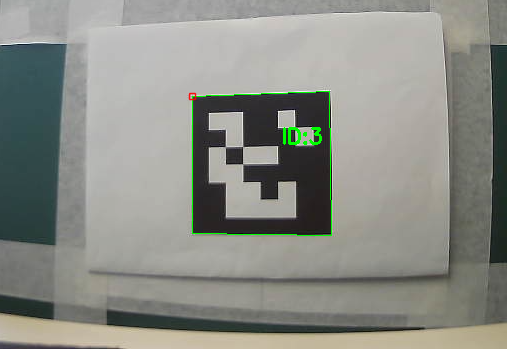
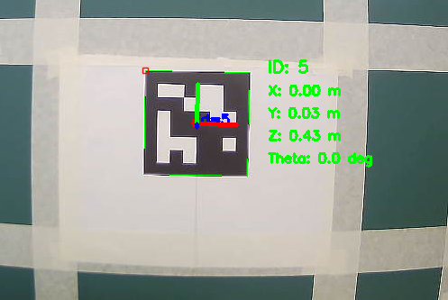

01
Vision par ordinateur
De l'image à la position (X, Y, Z) et à l'angle θ. L'étape clé : la calibration de la caméra.
 Organigramme de calibration
Photos du damier, détection des coins, calcul de la matrice caméra et de la distorsion, sauvegarde des réglages.
Organigramme de calibration
Photos du damier, détection des coins, calcul de la matrice caméra et de la distorsion, sauvegarde des réglages.
 Calibration par damier
10 × 7 carrés (9 × 6 coins), carrés de 29 mm, photos sous plusieurs angles.
Calibration par damier
10 × 7 carrés (9 × 6 coins), carrés de 29 mm, photos sous plusieurs angles.
K = [ 640,73 0 361,56 ]
[ 0 640,51 235,04 ]
[ 0 0 1 ]
D = [−0,377 0,132 0,0012 0,0004 0,0165]
Pourquoi calibrer ? La détection ne donne que des pixels. Pour obtenir (X, Y, Z) en mètres, il faut la focale, le centre optique et la distorsion de l'objectif.

Détection ArUco DICT_6X6_50, marqueur de 7,9 cm, OpenCV.
Pose 3D Position (X, Y, Z) puis θ = arctan(X / Z).Pourquoi ArUco ? Coins détectés précisément, pose directe, intégration facile à OpenCV. Un QR code sert surtout à stocker des données.
Vérifié à 42, 79,5, 235,8 et 288 cm
Erreur angulaire moyenne 0,23° → 1,03°
Plusieurs cibles : choix par identifiant ArUco